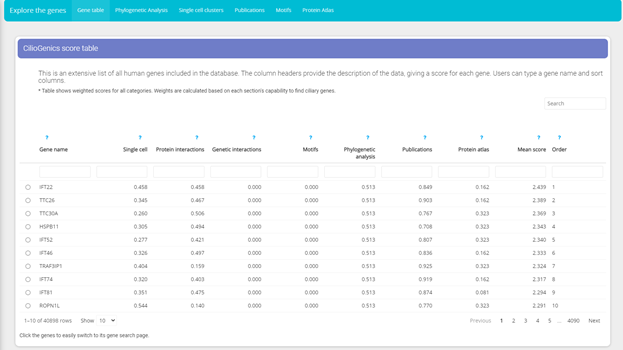

There are two usage of CilioGenics:
· Gene search: You can search a human gene by HGNC gene name, entrez gene id, synonym and Ensembl gene id. Genes in following organisms which have homolog in human can also be searched by gene name and gene id:
o Rattus norvegicus
o Mus musculus
o Drosophila melanogaster
o Danio rerio
o Caenorhabditis elegans
o Saccharomyces cerevisiae
· Explore data: Whole data can also be explored without having to specify a gene.

* Main gene search page
After searching the gene, further data can be explored about that gene.

* Various data can be selected to explore data
In general info page, you can find various information about the gene, including CilioGenics score for each different categories.
You can then select different tabs to examine the data about that gene further.

* Different tabs can be selected, each one providing information about searched gene.
Explore Data page:
Unlike the Gene Search page, Explore Data page provide more general information about the data.

* CilioGenics score table shows scores from all categories.
Just like “Gene search” page, Explore data page also have multiple tabs to select. Tabs are mostly the same with “Gene search” page. However, in this page, you can explore data without having to specify any gene, giving the advantage of discovering new genes for a particular feature (like discovering genes having RFX1 motif in their promoters).